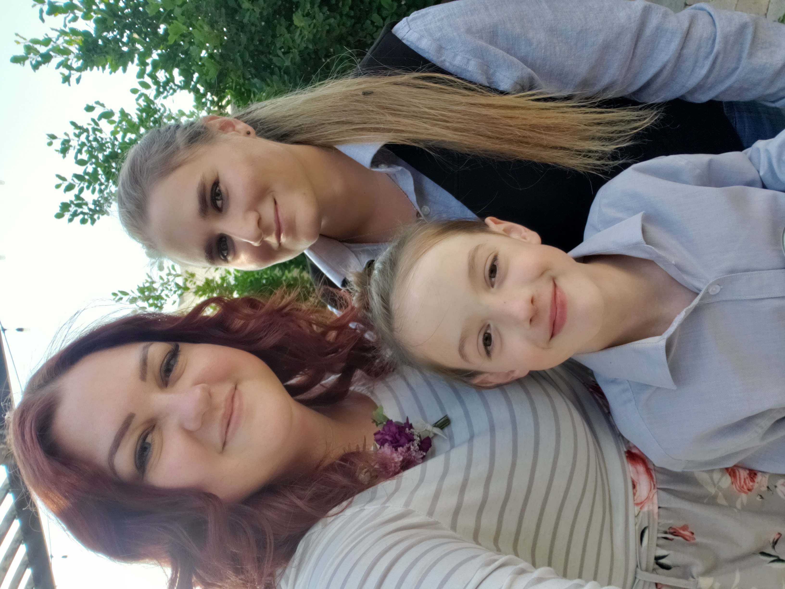

Who is Keara?
My name is Keara Allen. I was born in Utah and I have lived in Utah my entire life. I have 8 siblings and I love being in a big family. I have been married since 2016 and I am a mother to one amazing kiddo. Some hobbies of mine include refinishing furniture, resin crafts, reading, singing, and painting. I also love all bodies of water; lakes, streams, the ocean, etc. One day I will live on a lake with my family. I am a caring, empathetic, and goal driven person. For almost eight years I worked as a CNA in many different environments; long term care, drug and alcohol rehabilitation, short term rehabilitation, and in home services. I loved being a CNA and taking care of others but it is a taxing career, emotionally and physically. Earlier this year, 2023, I decided that it was time to find something new that I could enjoy and love as much as I loved being a CNA. That is when I decided to sign up for Tech Moms and see if I could find a place for me in Tech. There is still a lot for me to learn but I know that I will get there.